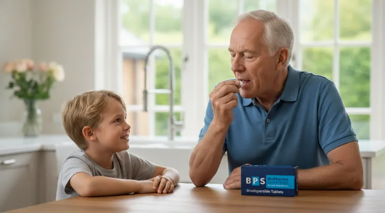
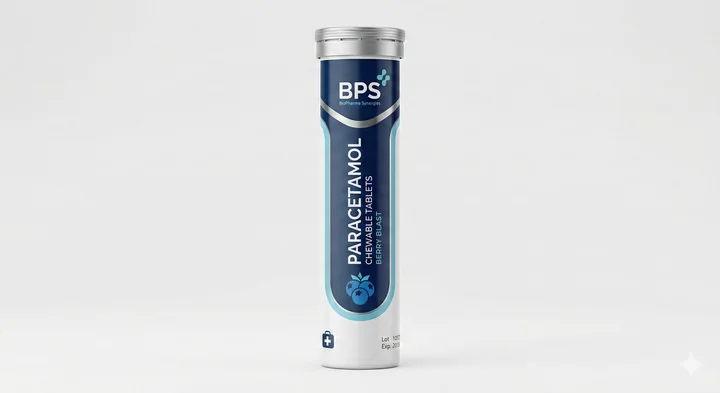
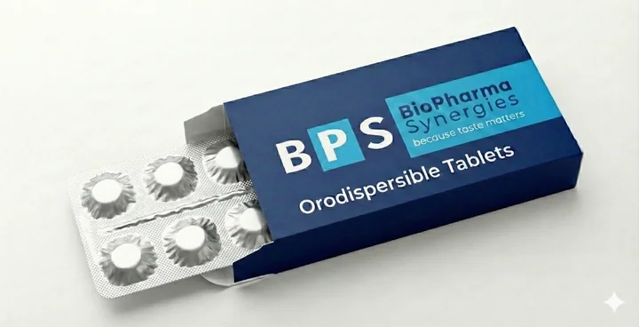
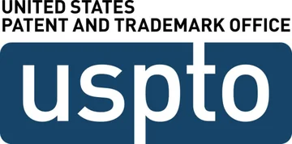
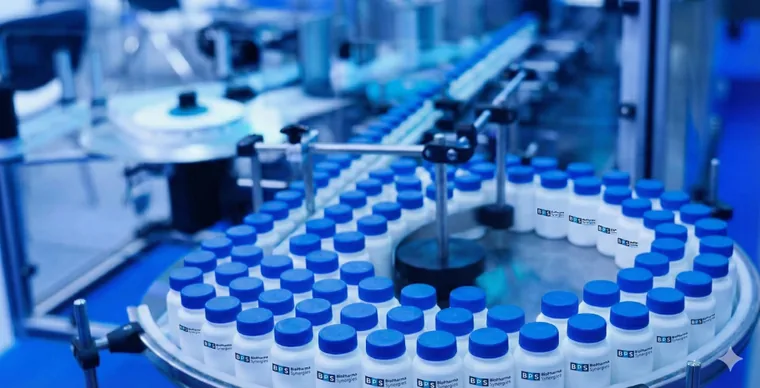
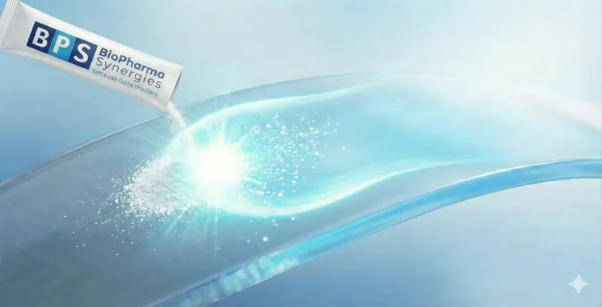
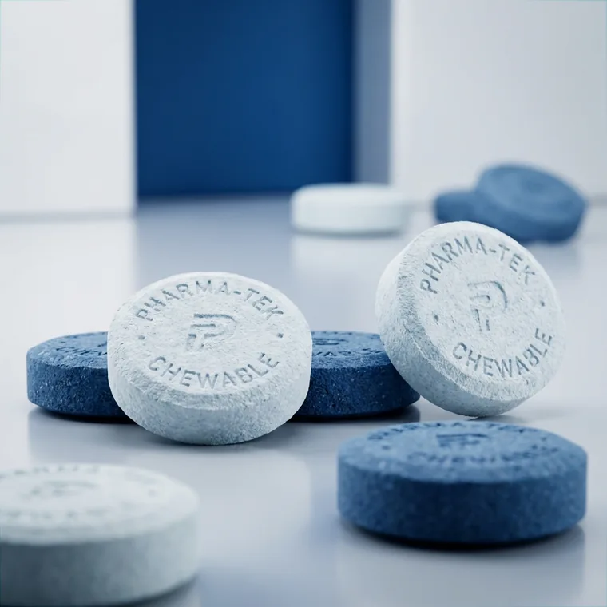
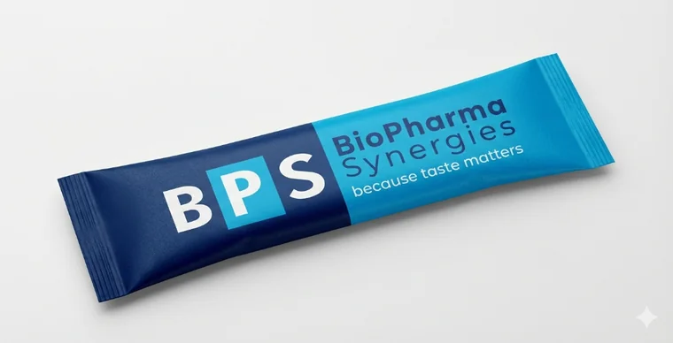
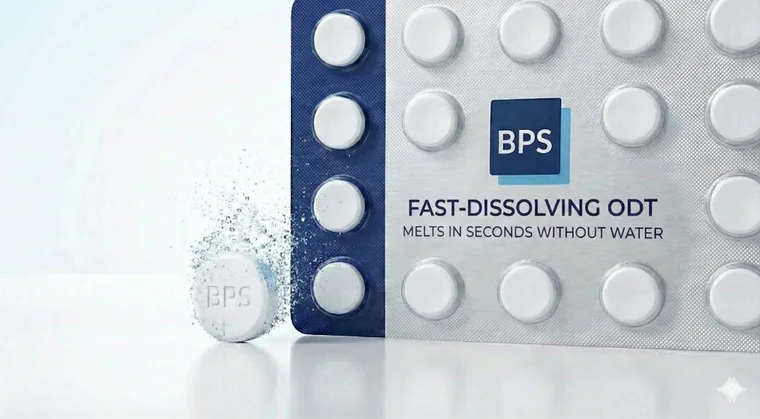

Because taste
matters.
Pharmaceutical Taste-Masking Solutions & Orodispersible Formulation Development
Out-licensing patented taste-masking technology for bitter APIs. Expand your portfolio with patient-centric waterless Stick Packs, ODTs, and chewable tablets.
The Waterless Advantage
Medication that adapts to the patient's life, not the other way around. Pioneering convenience through clinical excellence.
On-the-Go Freedom
Eliminate the need for water, allowing patients to take medication anywhere, anytime, with complete discretion.

Dysphagia Solutions
Empowering geriatric and pediatric patients who struggle with swallowing traditional solid dosage forms.
Unmatched Compliance
Superior organoleptic profiles directly correlate with improved patient adherence and therapeutic outcomes.
The Art of Compliance
REDEFINING THE
PATIENT EXPERIENCE



Market Dominance for Licensees
Targeting R&D Directors and Business Development leaders looking for significant PLM advantages.
-
Product Lifecycle Management
Extend patent life cycles by introducing improved formulations of existing APIs.
-
Demographic Expansion
Capture pediatric and geriatric markets with patient-friendly formats.
-
Premium Brand Positioning
Differentiate your brand in crowded markets through a superior sensory experience.

Cost-efficient Performance
The End of High-Cost Barriers in Taste-Masking
Historically, neutralizing the metallic or intensely bitter profiles of active pharmaceutical ingredients (APIs) has been synonymous with complex and prohibitive industrial costs. Legacy technologies—such as microencapsulation, polymer coating (e.g., Eudragit®), or Hot Melt Extrusion (HME)—demand specialized infrastructure, multi-stage production cycles, and high energy consumption.
A Paradigm Shift in Pharmaceutical Economics
These operational hurdles significantly inflate the final product's cost, often compromising profitability in price-sensitive or highly regulated generic markets.
The BPS platform breaks this cycle. Our proprietary technology does not rely on expensive physical barriers or energy-intensive machinery. Instead, it utilizes an innovative ternary chemical synergy that modulates the oral micro-pH to effectively block bitterness receptors at the molecular level.
Unrivaled Industrial Advantages
By choosing the BPS platform, manufacturers gain a decisive competitive edge through radical process optimization.

Standard Direct Mixing
Our formulation is achieved through simple physical blending. This is a standard, low-energy process that utilizes existing equipment found in any pharmaceutical facility.
Zero Thermal/Aqueous Phases
We eliminate the need for freeze-drying, spray-drying, or wet granulation. By removing the requirements for water, heat, and solvents, we drastically reduce both CapEx and operational timelines.
Immediate Scalability
The technology is designed for a Seamless Tech Transfer. It is fully compatible with standard manufacturing lines, facilitating a rapid and cost-effective transition to high-volume production of Stick Packs, ODTs, and other modern dosage forms.
BPS: High-performance palatability. Optimized production economics.
Comparative Production Cost Analysis
The BPS platform achieves a lower total manufacturing cost versus all conventional taste-masking techniques through process simplification and ambient-temperature operation.
vs. Baseline
| Manufacturing Technique | Energy Demand OpEx | Equipment Cost CapEx | Thermal Degradation Risk |
|---|---|---|---|
| BPSynergies Platform Our Technology · −30% | Minimal (Room Temp.) | Low (Standard) | None |
| Spray Drying | Very High | High | Moderate |
| Hot Melt Extrusion (HME) | High | High | High |
| Ion-Exchange Complexation | Moderate | Moderate | Low |
The BPS proprietary masking process primarily utilizes a direct mixing of the components, a method that operates entirely at room temperature. By avoiding the application of heat or high-shear forces, we eliminate the risk of forming degradation products or impurities. This approach is specifically designed to enhance the stability of thermolabile active ingredients that are susceptible to thermal degradation.
In contrast to more invasive techniques—such as spray drying, hot melt extrusion (HME), or ion-exchange resin complexation—our process preserves the molecular integrity of the API while reducing total manufacturing costs by approximately 30%.
Scientific References
- Journal of Pharmaceutical Sciences — peer-reviewed analyses of taste-masking technologies and comparative manufacturing economics.
- Ion-Exchange Resins as Controlled Drug Delivery Carriers / Pharmaceutical Applications of Ion-Exchange Resins — specialist reviews on ion-exchange resin complexation in drug delivery.
- Repka, M. A., et al. "Applications of hot-melt extrusion for drug delivery." Expert Opinion on Drug Delivery.
Strategic & Scientific Leadership
Two pillars of excellence: business vision and scientific rigor driving pharmaceutical innovation.
Francesc Agell
CEO of BPS Synergies
Redefining the Pharmaceutical Experience through Technical Excellence
With a career spanning over three decades at the forefront of the chemical and pharmaceutical industries, Francesc Agell does more than lead BPS Synergies—he is driving a paradigm shift in oral drug delivery.
A Vision Forged Through Decades of Expertise
Over 30 years of experience in the promotion and commercialization of synthesis intermediates, Active Pharmaceutical Ingredients (APIs), and drug licensing have provided Francesc with a unique, 360-degree view of the industry. This deep immersion in the value chain—from the raw molecule to the final license agreement—led him to identify critical systemic gaps:
- Pinpointing Market Gaps: He recognized that while the industry excelled at molecular efficacy, it often overlooked the "last mile" of medicine: the patient experience.
- Addressing the "Pain": He observed how breakthrough therapeutic developments often struggled with patient adherence due to sensory barriers, particularly in pediatric and geriatric populations.
- Regulatory Mastery: His extensive knowledge of regulated markets ensures that innovation at BPS Synergies is not only disruptive but also meets the most stringent global safety and quality standards.
BPS Synergies: The Strategic Solution
Under his leadership, BPS Synergies has evolved from a supplier into a strategic innovation partner. Francesc has channeled his expertise into solving one of the most persistent challenges in oral administration: the science of taste.
"True innovation is not just about what we cure, but about how we ensure the cure reaches the patient in an effective, humane, and sustainable way."
Through the development of proprietary patents focused on taste-masking, Francesc and his team have unlocked solutions that:
- Mask bitter or metallic notes in complex APIs without compromising bioavailability.
- Drastically improve therapeutic adherence, reducing treatment abandonment caused by organoleptic rejection.
- Provide a competitive edge for pharmaceutical companies, allowing them to differentiate their portfolios in saturated markets through tangible, patented advantages.
Authority and Commitment
Francesc Agell embodies the CEO who speaks the language of both the laboratory and the boardroom. His authority is built on a career dedicated to understanding the industry's shortcomings and methodically engineering the solutions the market has long demanded.
At BPS Synergies, his mission is clear: To set a new global standard for oral drug administration through the science of taste.

Dr. Jaume Saurí
Scientific Director
Scientific Leadership and Innovation
At BioPharma Synergies, our technology is supported by deep industrial experience and academic rigor. Dr. Jaume Saurí, holding dual degrees in Pharmacy and Biochemistry and a Cum Laude Doctorate, leads the development of our most advanced pharmaceutical solutions.
Industrial Expertise: From R&D to Production Plant
Dr. Saurí brings over 15 years of direct experience in pharmaceutical industry giants such as Almirall and Recipharm. His trajectory is defined by a comprehensive vision of medicine, spanning from conceptual design in the laboratory to industrial scale-up and process validation.
- Galenic Development: Has led the reformulation and technology transfer of multiple pharmaceutical forms, including tablets, capsules, solutions, and inhalation powders.
- Quality and Registration: Holds solid postgraduate training in Quality (GMP/GLP) and Pharmaceutical Registration, ensuring that every innovation meets the most demanding regulatory standards.
Specialization in Orodispersible Technologies
Currently, Dr. Saurí focuses his research on the design of new orodispersible formulations (ODT). His work is fundamental to BPS's mission: developing medicines that dissolve rapidly in the mouth, improving the masking of bitter active ingredients and facilitating therapeutic adherence in pediatric, geriatric, or dysphagia patients.
Academic Excellence and Publications
Doctorate from the University of Barcelona with a unanimous Cum Laude qualification, his thesis focused on controlled release systems and direct compression technologies. His contribution to pharmaceutical science is evidenced in high-impact international publications:
Featured Scientific Publications:
- Formulation and characterization of mucoadhesive controlled release matrix tablets of captopril. Journal of Drug Delivery Science and Technology (2017).
- Relationships between surface free energy, surface texture parameters and controlled drug release in hydrophilic matrices. International Journal of Pharmaceutics (2015).
- Quality by design approach to understand the physicochemical phenomena involved in controlled release. International Journal of Pharmaceutics (2014).
- The use of the SeDeM diagram expert system for the formulation of Captopril SR matrix tablets by direct compression. International Journal of Pharmaceutics (2014).
With Dr. Saurí, BioPharma Synergies ensures that every project is developed under the principles of Quality by Design, merging materials science with the real needs of patients.
Revolutionizing Oral Delivery
The Synergy of Instant Taste Masking and Advanced Rheological Engineering
Three pillars of pharmaceutical innovation that redefine patient experience and manufacturing excellence.
Sensory Engineering
The Ternary Synergy: Mastering Bitterness Without Barriers
Our proprietary sensory modulation technology delivers instant taste masking without affecting drug release, ensuring optimal palatability from the first moment of administration.
-
Non-Occlusive Mechanism The technology elevates the bitter taste detection threshold through direct sensory interference in the oral cavity.
-
Neutralization of Critical APIs Proven efficacy on highly bitter active ingredients such as triptans and antihistamines.
-
Superior Sensory Profile Dramatically improves patient experience by eliminating metallic or bitter aftertaste immediately.

Manufacturing Efficiency
Operational Excellence: Direct Mixing and Superior Flowability
Designed for production and galenic managers, focusing on the process advantages of orodispersible powders.
-
Process Simplification The technology enables Direct Mixing, eliminating costly steps such as wet granulation or fluid bed coating.
-
Optimized Rheological Parameters Formulations exhibit excellent Hausner Ratio (1.04-1.14) and Compressibility Index of 9-12%, ensuring precise dosing on high-speed lines.
-
Industrial Stability Flow properties remain unchanged during storage, ensuring batch-to-batch reproducibility.

Therapeutic Performance
Clinical Advantage: Ultra-Fast Dissolution for Accelerated Bioavailability
Direct impact on the patient and clinical value of the final product.
-
Dissolution Kinetics Ultra-rapid dissolution in the oral cavity, typically in less than 15 to 30 seconds, without the need for water.
-
Optimized Absorption With no polymeric barriers, the drug is immediately available for absorption, critical in rescue treatments like migraine.
-
Format Versatility Technology adaptable for both powder stick packs and orodispersible tablets, covering a broad spectrum of pathologies.
Proven Across 50+ APIs
Our proprietary platform achieves an 85% success rate in neutralizing the inherent bitterness and metallic notes of Active Pharmaceutical Ingredients (APIs). Validated across more than 50 distinct APIs spanning 8 major therapeutic categories.
Each API undergoes systematic organoleptic evaluation using our Dual-Validation Protocol. The following therapeutic categories represent our validated scope:
Antimigraine Agents
e.g., Triptans
Antihistamines
e.g., Bilastine, Levocetirizine
Antihypertensives
Blood pressure regulation
Analgesics & NSAIDs
Pain & inflammation relief
Anti-inflammatories
Advanced anti-inflammatory APIs
CNS Drugs
e.g., Atomoxetine, Lisdexamfetamine (ADHD)
Antibiotics
Broad-spectrum antimicrobials
Antivirals
Antiviral therapeutic agents
The Science of Certainty
To ensure our partners receive market-ready formulations, BPS employs a rigorous Dual-Validation Protocol. We combine the subjectivity of human sensory perception with the objective precision of advanced electronic sensing.
In-Vitro Validation
The Electronic Tongue (E-Tongue)
To eliminate subjective bias and generate reproducible data, BPS utilizes state-of-the-art Electronic Tongue technology. This bio-mimetic tool is essential for quantifying our taste-masking efficiency (TME).
How the Electronic Tongue Works
The E-Tongue employs an array of non-specific, cross-selective electrochemical sensors composed of lipid/polymer membranes that mimic the biological organization of the human tongue's taste buds.
In-Vivo Validation
Human Organoleptic Panels
We conduct standardized testing with healthy volunteers to assess real-world acceptability. Our panels evaluate:
Delivery Systems
Versatile formats engineered for manufacturing scalability and patient delight.

Chewable Tablets
Soft-textured, high-load capacity tablets with immediate release profiles.

Stick Pack Powder
Direct-to-mouth powder with instant melt-in-mouth technology.

Orodispersible Tablets (ODT)
Fast-dissolving tablets that melt in seconds without water.
Clinical Superiority
Beyond convenience. Evidence-based clinical advantages of waterless delivery systems.
Unimpeded Dissolution Kinetics
Unlike polymer coatings that delay release, our non-occlusive ternary system masks bitterness via oral micro-pH modulation—preserving intrinsic API dissolution profiles and facilitating bioequivalence in ODTs and Stick Packs.
Unit-Dose Precision
Single-unit Stick Packs, ODTs, and chewable tablets eliminate the measuring variability of liquid syrups and suspensions, ensuring reproducible dosing across pediatric and geriatric regimens.
Organoleptic & Waterless Adherence
Neutralizing bitter API taste and eliminating the need for water reduces treatment refusal and "pill burden" across pediatric, geriatric, and chronic patient populations.
Dysphagia & Swallowing Safety
Orodispersible powders and fast-disintegrating ODTs disperse rapidly in saliva (<15–30 s), mitigating choking risks compared to monolithic tablets in patients with dysphagia.
European & US Patent Protection
Exclusive rights for formulation, production, and commercialization across major markets.
Territories
Western & Northern Europe
Eastern & Central Europe
South & Mediterranean
United States & Territories
Key Technological Advantages
Significantly outperforms current competitors
Tailored flavor for every region and audience
Superior to traditional paracetamol tablets
Industrial scalability guaranteed
Protected Formats
-
Orodispersible Powder Core ternary composition allowing rapid dissolution without water.
-
Stick Pack (Claim 13) Protected commercial presentation for patient convenience.
-
Compressed Tablet (Claim 14) Direct compression of the powder into solid dosage forms.
Contact
Visit us in the heart of Barcelona's innovation ecosystem
BPsynergies S.L.
Gran Vía de Carles III, 41, Esol. 2ª
08028 Barcelona, Spain
Monday - Friday: 9:00 - 18:00